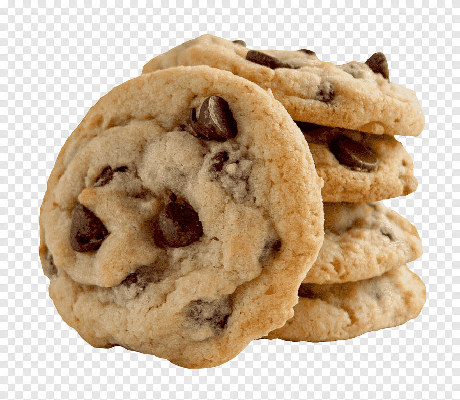

Description:
Peanut Butter Chocolate Chip Cookies are big, thick, chewy, and soft and loaded with peanut butter and chocolate flavor. They are outrageously good!
These cookies can be served at a gathering or just for the family. NOTE: Please be mindful to people that are allergic to peanut butter.
Ingredients:
- 1 cup packed brown sugar
- 1/2 cup white sugar
- 1/2 cup butter, softened
- 1/2 cup peanut butter
- 2 eggs
- 2 tablespoons light corn syrup
- 2 tablespoons water
- 2 teaspoons vanilla extract
- 2 1/2 cups all-purpose flour
- 1 teaspoon baking soda
- 1/2 teaspoon salt
- 2 cups chopped semisweet chocolate
Steps / Directions:
- Preheat the oven to 375 degrees F (190 degrees C).
- Cream sugars, butter, and peanut butter in a large bowl until smooth. Beat in eggs one at a time, then stir in corn syrup, water, and vanilla. Combine flour, baking soda, and salt in a seperate bowl; stir into peanut butter mixture. Fold in chocolate chunks.
- Scoop 1/4-cup portions of dough 3-inches apart onto ungreased baking sheets.
- Bake in the preheated oven until edges are golden, 12 to 14 minutes. Allow cookies to cool for 1 minute before transferring to wire racks.
Return to homepage